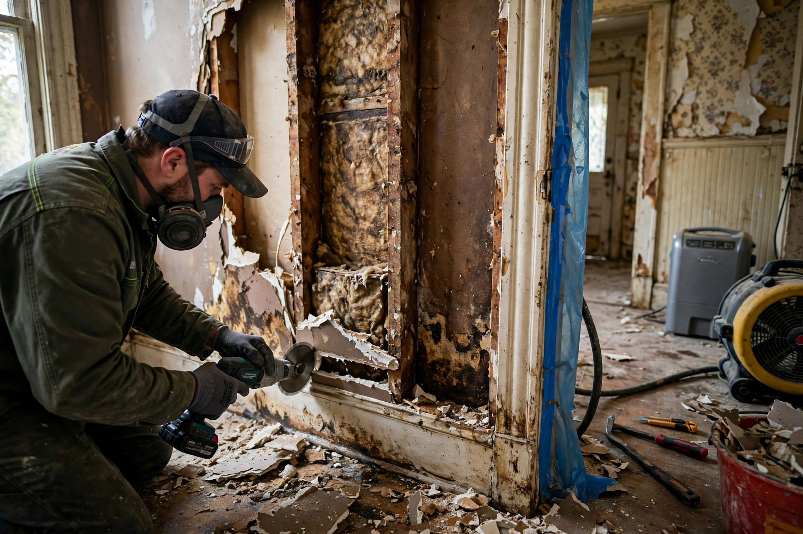

Home / Water Damage / Restoration
Caldwell, IdahoWater damage restoration, done in the right order
Pulling up the water is the easy part. True restoration means drying the structure, removing what cannot be saved, stopping mold before it starts, and rebuilding — in that sequence, with nothing skipped.
Caldwell water damage services
If restoration is more than you need, these cover the individual pieces.
Emergency Water Extraction
Standing water removed fast, before it migrates into walls and subfloor.
Learn more →Flooded Basement Cleanup
Pump-out, drying, and salvage when a Caldwell basement takes on water.
Learn more →Ceiling Water Damage Repair
Stains, sagging, and drips traced to roof leaks or upstairs plumbing.
Learn more →Water Damaged Drywall Repair
Flood cuts, drying, and rebuild of walls after a leak or flood.
Learn more →Why Caldwell homes end up needing this
Caldwell's housing stock and water geography create specific failure patterns — these are the most common.
Original plumbing in older homes
Many houses near historic downtown still run on galvanized supply lines installed decades ago. Corrosion narrows them from the inside until a joint lets go — often inside a wall, soaking framing for days before anyone notices.
Creek-adjacent groundwater
Properties near Indian Creek sit close to the water table. After heavy rain or rapid snowmelt, hydrostatic pressure pushes moisture through foundation walls and slab joints, turning basements and crawlspaces into slow, recurring restoration jobs.
Irrigation and ditch seepage
Caldwell's agricultural edges are laced with irrigation laterals. A breached ditch bank or an overwatered field can send water across a lot line and under a foundation, especially in homes built when drainage standards were looser.
Post-war builds, original materials
Ranches and bungalows from Caldwell's mid-century growth spurts often have original drywall, minimal vapor barriers, and flat or low-slope roof sections. When water finds these houses, it spreads fast through materials never designed to resist it.
A water heater failure off Linden Street
Imagine a 1970s ranch off Linden Street where the water heater — original to a remodel from the nineties — ruptures at the base overnight. By morning, forty gallons have spread across the utility room, under the hallway carpet, and into the drywall of an adjoining bedroom. Restoration starts with extraction and pulling the unsalvageable carpet pad. Moisture mapping finds the bottom twelve inches of bedroom drywall wet, so it gets cut out and removed. Air movers and a dehumidifier run for four days while the exposed framing is treated. Then new drywall, texture, paint, and carpet go in. The whole sequence matters: drying the framing before closing the wall is what keeps this from becoming a mold job six months later. For the health background on why fast drying matters, see EPA — Mold, Moisture & Your Home and CDC — Mold.
What restoration actually involves
Six phases, each one depending on the last. This is the full job — not just the wet-vacuum visit.
1. Emergency extraction
Standing water comes out first with truck-mounted or portable extraction. Every hour water sits, it migrates further into walls, subfloor, and framing.
2. Moisture mapping
Meters and thermal imaging trace how far water traveled — inside wall cavities and under flooring where eyes cannot reach. The map decides what gets opened up.
3. Structural drying
Air movers and dehumidifiers run for days, not hours, pulling moisture out of studs, plates, and subfloor. Daily readings confirm progress toward dry standard.
4. Removing the unsalvageable
Drywall, insulation, and flooring that absorbed contaminated water or lost structural integrity get cut out. Clean framing stays; compromised material goes.
5. Mold prevention
Exposed framing gets antimicrobial treatment while drying continues until moisture sits below the threshold where mold colonizes.
6. Rebuild
Drywall, trim, paint, and flooring go back in — matched to the existing finishes. The room should look like the leak never happened.
Restoration questions
What is the difference between water extraction and full restoration?
Extraction removes the standing water — that is only the first hour of the job. Full restoration adds moisture mapping, structural drying of walls and framing, removal of materials that cannot be saved, mold prevention, and the rebuild. Skipping the middle steps is why dried-looking rooms develop odor or mold weeks later.
How long does structural drying take in a Caldwell home?
Most residential drying takes three to five days of continuous equipment run time, checked daily with moisture meters. Older Caldwell homes with plaster or dense framing can take longer because those materials release moisture slowly. Equipment stays until readings hit dry standard, not just when surfaces feel dry.
Do you handle the rebuild, or only the drying?
Both. After drying and clearance we rebuild what was removed — drywall, trim, paint, and flooring transitions — so you are not left coordinating a separate contractor. You get one point of contact from the first extraction to the final walkthrough.
Will my homeowners insurance cover water damage restoration?
Sudden and accidental events — a burst supply line, an appliance failure, a storm-driven roof leak — are commonly covered. Gradual seepage, neglected maintenance, and most floodwater are usually excluded. We photograph and document moisture readings from day one so your adjuster has a complete record.
How do you keep mold from growing while the house dries?
Speed and airflow. Mold can colonize damp porous materials within 24 to 48 hours, so rapid extraction plus dehumidification is the primary defense. We also apply antimicrobial treatment to exposed framing where appropriate. The EPA's mold guidance notes that drying within that first day or two is the key step.
Start with a conversation
Tell us what happened — the source, the rooms affected, how long it has been wet — and we will tell you straight whether you need full restoration or something smaller.